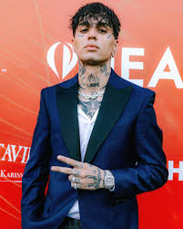
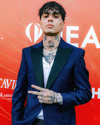

Artistas
Los artistas musicales comienzan sus carreras explorando sonidos que puedan representarles para hacer sus primeros pasos dentro de la industria. Cuando los encuentran, no siempre permanecen con ellos y pueden realizar cambios por diversos motivos. Desde la poca representación personal que les transmiten hasta las adaptaciones a los nuevos géneros que van surgiendo y, de esta manera, no quedarse a un lado en la música.
Artistas favoritos
- Anuel AA
- Duki
- C.R.O
Mejores cantantes
- Bad Bunny
- Michael Jackson
- Freddie Mercury
Artistas que tienes que escuchar
- Kidd Keo
- Representante del trap en español con influencias internacionales.
- Eladio Carrión
- Uno de los mejores exponentes actuales de trap, conocido por su habilidad técnica.
Recomendaciones
Ysy A
Referente del trap en Argentina.
Lucho SSJ
Referente del trap en Argentina.